Film, Video & Audio
Barren
Barren was a one-day project made on February 6th, 2017.
It was around this time that I decided to challenge myself creatively
at least once a month. With this project, I wanted to create
a film with something that resembled a story, but left the meaning of it
up to the viewer.
The name of the film ended up being
Barren, to represent the cold and dead feeling
of a February in Sweden.
Siren
Made during the September-December period of 2016, the short film
Siren was made as a project for a film class I was taking at the time.
I worked on this with Nawid Abed, who has his own YouTube channel
over at NawidVisuals.
I was the co-director and location sound manager on this project.
Consciousness
Consciousness was a video essay I made during December in 2016 for a class I was taking at the time. It analyzes the first season of Westworld and provides some questions for the viewer.
Voice Acting
The Code (Fallout 4 Mod)

NexusMods link
For the mod The Code, I played the role of Luke.
Mod Description: A strange broadcast pinpoints the location of three strangers in the Commonwealth, tangled up within a tenement building in the heart of Boston. Make friends, or enemies, explore, and discover, as you guide them to their destination.
Testemonial: Rasmus has been super easy to work
with! He was very prompt with the delivery of his files, the
quality of which had been clean enough to where all I had to do
was adjust volume levels to match the projects overall (which
admittedly I did not provide him). He was happy to re-record one
line when asked, as well. We would happily work with Rasmus
again in the future!
Hilda Hughes - An Institute Story (Fallout 4 Mod)

NexusMods link
For the mod Hilda Hughes - An Institute Story, I played the role of Steve Clarke.
Mod Description: Join Director of Robotics, Hilda Hughes, as she investigates the Prototype Synth Project. In doing this, the player will be able to enter the memories of five pre-war citizens and then discover their post-war fates. However, all is not well in the Robotics Division. A synth has gone missing and Hilda isn't convinced it was a production error.
Testemonial: Rasmus was very easy to work
with. He took direction well and delivered his lines promptly,
all of which were great quality. I didn't need any rerecorded but
he was willing to do so if needed. Would definitely use him again.
Programming and Web Development
ChopBot

ChopBot, a Discord chat bot developed for servers affiliated with Rooster Teeth in some way. It features custom commands that that range from having to do with moderation of the server to random stuff like a virtual magic 8-ball.
This project is still on-going, and likely won't stop being developed for years to come.